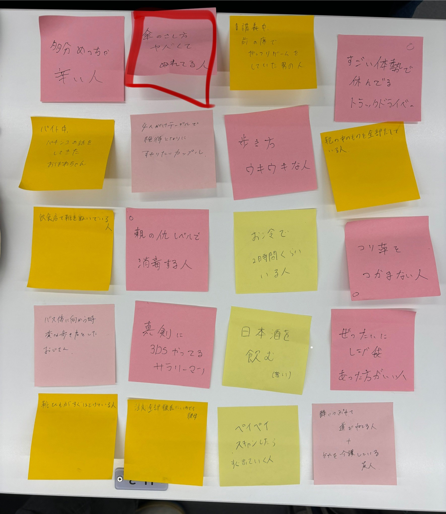
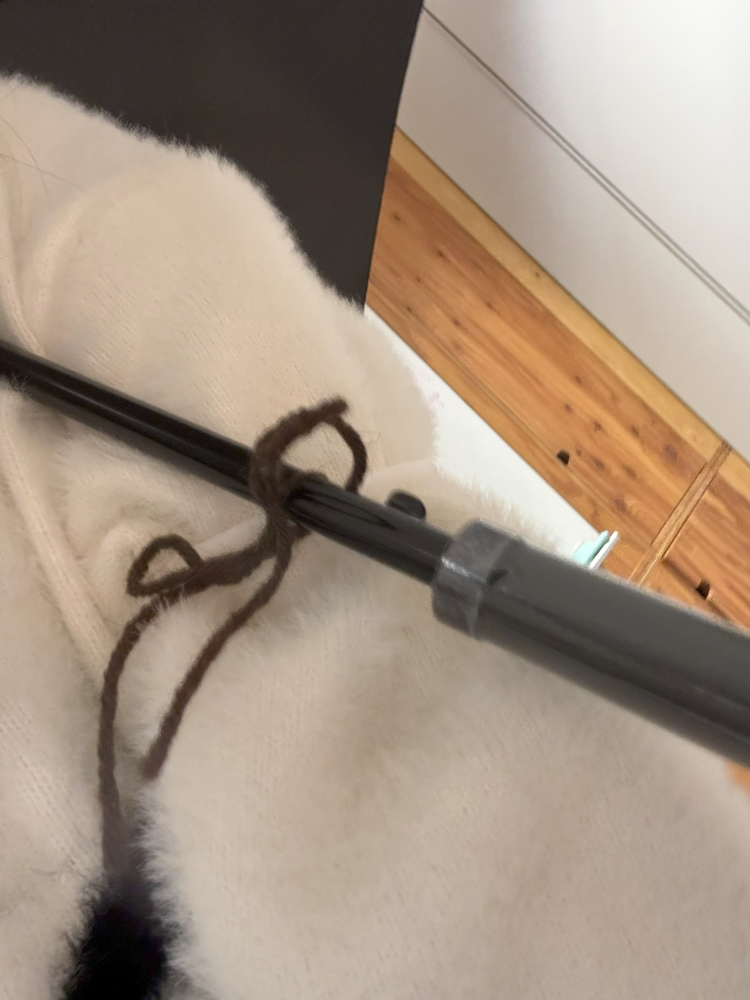
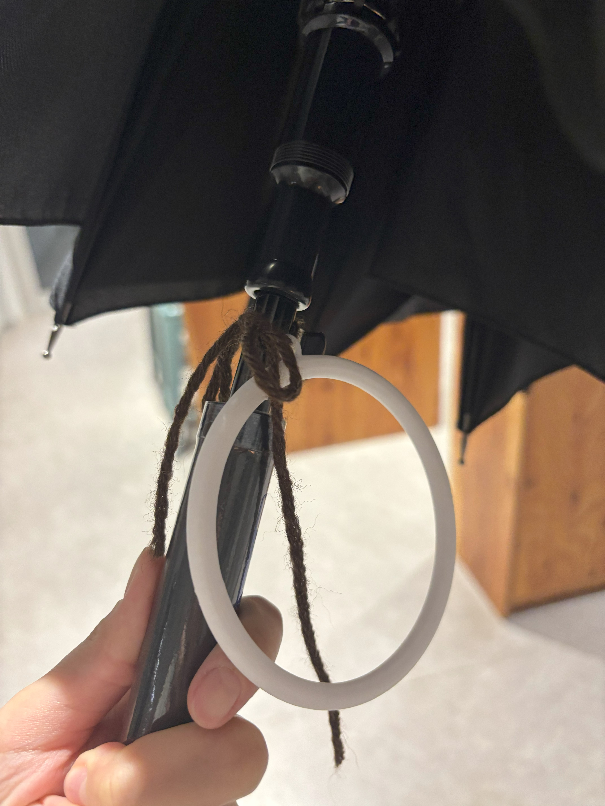

<!DOCTYPE html>
<html lang="jp"></html>
<head>
    <title>誰かのためのもの</title>
</head>
<body>
    <h1>誰かのためのもの</h1>
    <h2>傘と腕を固定する！</h2>
    <h3>今回作るもの</h3>
    <br>
    <div>赤で囲んである、「傘のさし方ヤバくてぬれてる人」ってのがあると思うんですけど</div>
    <div>私はこの人がさし方がやばいのではなく、何かしようとしているのではないかと考えました！</div>
    <div>なので今回は、傘をさした状態でも両手を使えるようにするものを作ろうと考えました。</div>
    <h3>設計と完成品</h3>
    <br>
    <br>
    <div>見た目もかわいい♡</div>
    <br>
    <div>紐は、ゴムとかにしてもよさそう！</div>
    <h3>誰に向けたものか</h3>
    <div>雨の日に、傘を持ちながら何かをしようとしていた人に向けて</div>
    <div>傘と腕を固定することができれば、手で持たなくてもいいので</div>
    <div>荷物が多い人や、傘を持ちながら何かをしたい人に役立つのではと考えました。</div>
    <h3>作品の説明</h3>
    <br>
    <div>傘につけて、腕を輪っかの中に通せば、腕と傘が固定される。</div>
    <div>傘につけたままでも大丈夫！丸の形を変えれば新しいアクセサリーとしても！</div>
    <h3>改善点と今後のアイデア</h3>
    <div>クリップのように、傘に挟めるタイプにすれば、</div>
    <div>小さい子の鞄や、サイズ関係なくいろいろな人が使うことができる。</div>
    <h2>同じグループのメンバーのリンク</h2>
    <a href="https://search.app/cjA82VpjzFhWQ35k7">優斗さんのひもストッパー</a><br>
    <a href="https://sites.google.com/view/funcky-/home">拓海さん</a><br>
    <a href="https://sites.google.com/view/kanagawahachi/home">はんなさん</a><br>
    <a href="https://kaih45742.github.io/xbp/digi_fab/">かいさん</a><br>

</body>